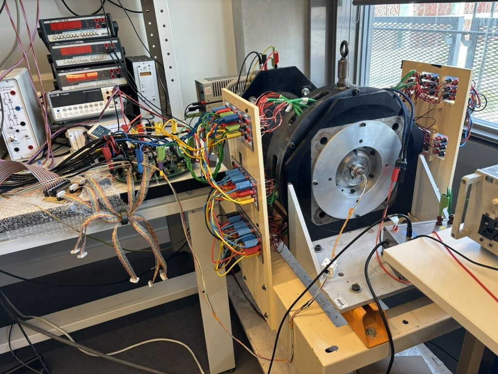
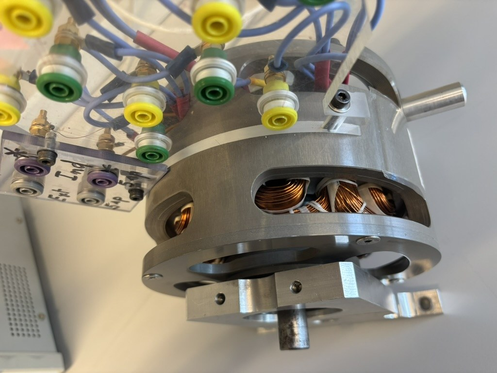

Démonstrateur
CTAF 1 kW et 5 kW
Machines synchrones fractionnées et sectorisées commandées par plusieurs onduleurs.
Les moyens expérimentaux constituent un élément central de la démarche TeSE : concevoir, modéliser, mesurer, valider et commander.
Machines synchrones fractionnées et sectorisées commandées par plusieurs onduleurs.

Caractérisation haute vitesse, mesures de performance et de pertes sur cycle de conduite.

Machines à commutation de flux, machines multiphasées et topologies tolérantes aux défauts.